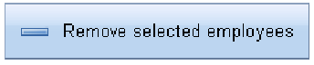

While GWT provides a standard button , the Dojo button can be more interesting. In Dojo, we define a button appearance by its label and its icon-class. The label is the text which will be shown in the button, while the icon-class is the css class used to style the icon.

For example , the above button’s label is “Remove selected employees” while it’s icon-class is removeEmployeeButtonIcon, which is defined as following in a css file :
To import this widget see below:
The Button’s constructor has two parameters : the first one is it’s label , the second one is it’s icon-class.
Tatami’s button component is also extending GWT Button. That means you can also use a simple constructor with only the label, or another constructor with a default ClickListener.
Because it is extending the GWT Button Component, it has the same support for ClickListeners. To add a ClickListener to Tatami button component, just use addClickListener(ClickListener listener).